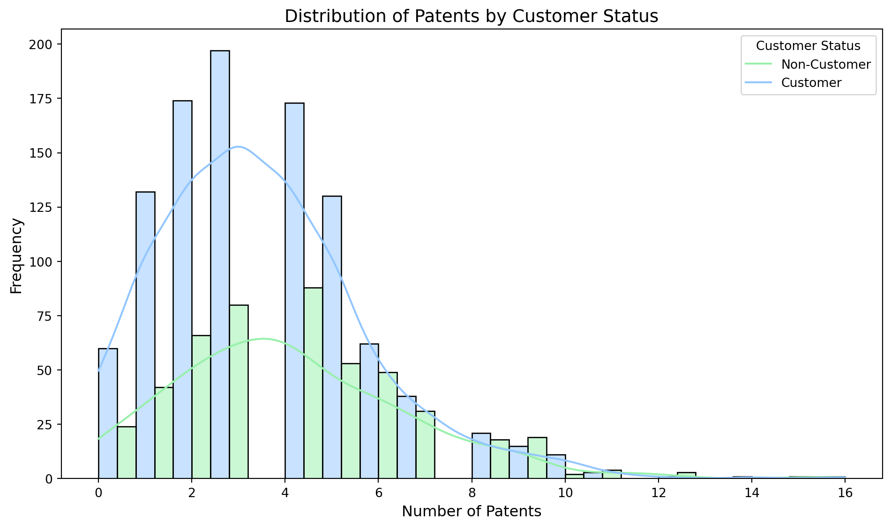
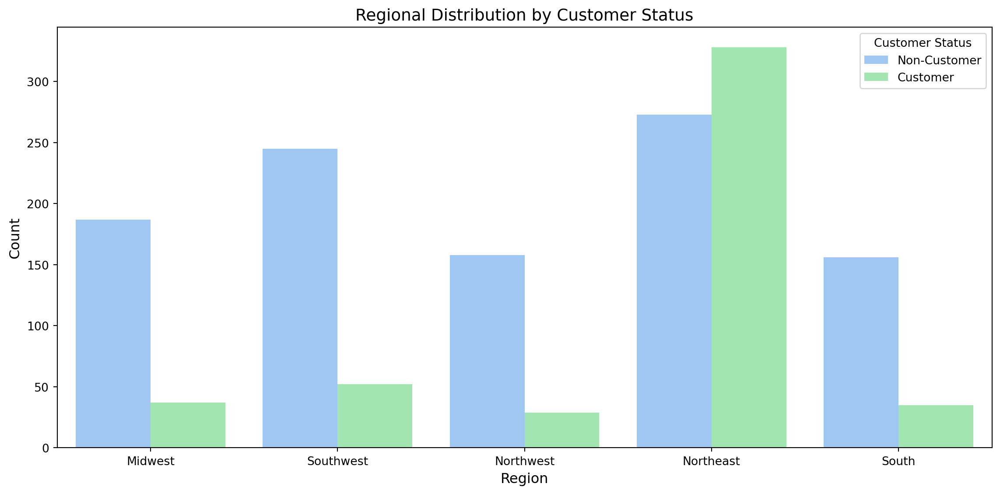
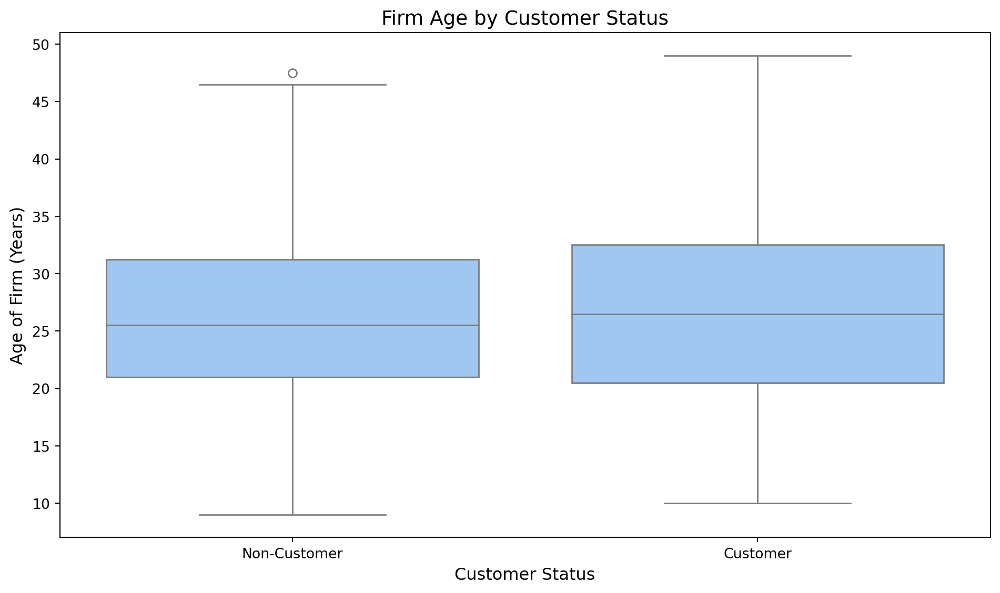
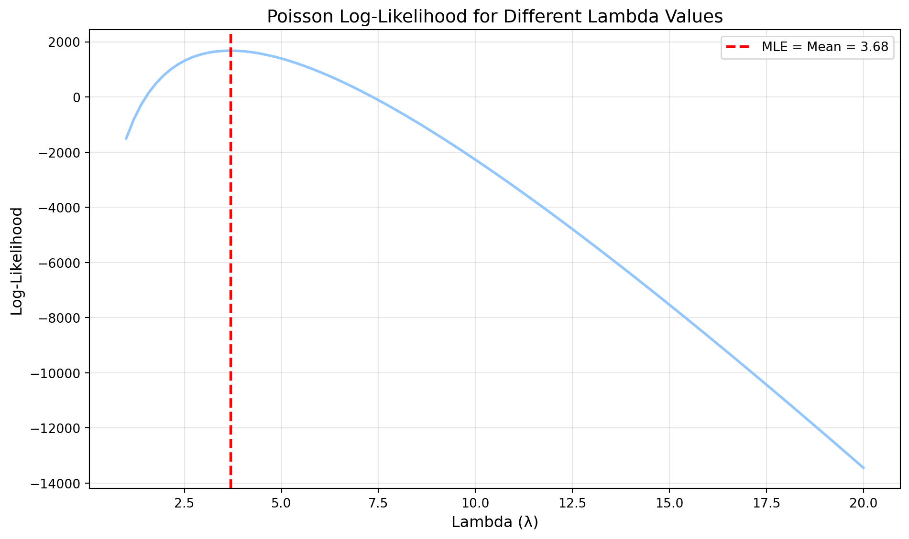
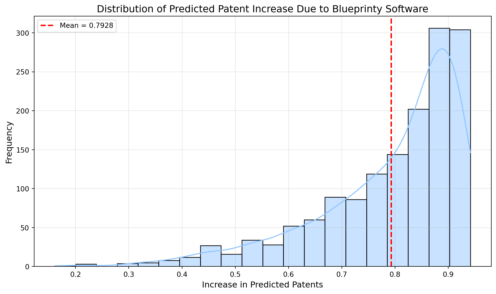

Blueprinty is a small firm that makes software for developing blueprints specifically for submitting patent applications to the US patent office. Their marketing team would like to make the claim that patent applicants using Blueprinty’s software are more successful in getting their patent applications approved. Ideal data to study such an effect might include the success rate of patent applications before using Blueprinty’s software and after using it. Unfortunately, such data is not available.
However, Blueprinty has collected data on 1,500 mature (non-startup) engineering firms. The data include each firm’s number of patents awarded over the last 5 years, regional location, age since incorporation, and whether or not the firm uses Blueprinty’s software. The marketing team would like to use this data to make the claim that firms using Blueprinty’s software are more successful in getting their patent applications approved.
Data
# Import librariesimport pandas as pdimport numpy as npimport matplotlib.pyplot as pltimport seaborn as snsimport scipy.optimize as optimizeimport scipy.stats as statsimport statsmodels.api as smfrom statsmodels.genmod.families import Poisson# Set style for plotsprint(plt.style.available) # Print available stylesplt.style.use('seaborn-v0_8-pastel') # Use a guaranteed styleblueprinty = pd.read_csv('/home/jovyan/vvwebsite/blog/homework2/blueprinty.csv')blueprinty.head()
patents: Number of patents filed by the firm region: Geographic region of the firm age: Age of the firm in years iscustomer: Binary indicator (1 = Blueprinty customer, 0 = not a customer)
# Compare histograms and means of number of patents by customer statuscustomer_patents = blueprinty[blueprinty['iscustomer'] ==1]['patents']non_customer_patents = blueprinty[blueprinty['iscustomer'] ==0]['patents']print(f"Mean patents for customers: {customer_patents.mean():.2f}")print(f"Mean patents for non-customers: {non_customer_patents.mean():.2f}")# Create histogramplt.figure(figsize=(10, 6))sns.histplot(data=blueprinty, x='patents', hue='iscustomer', multiple='dodge', kde=True, bins=20)plt.xlabel('Number of Patents', fontsize=12)plt.ylabel('Frequency', fontsize=12)plt.title('Distribution of Patents by Customer Status', fontsize=14)plt.legend(title='Customer Status', labels=['Non-Customer', 'Customer'])plt.tight_layout()plt.show()
Mean patents for customers: 4.13
Mean patents for non-customers: 3.47

The descriptive statistics show that Blueprinty customers have a higher mean number of patents (4.13) compared to non-customers (3.47). The histogram visualization confirms this pattern, showing that the distribution for customers is shifted slightly to the right compared to non-customers.
However, this simple comparison doesn’t control for other factors that might influence patent activity. Blueprinty customers are not selected at random. It may be important to account for systematic differences in the age and regional location of customers vs non-customers.
# Region by customer statusregion_customer = pd.crosstab(blueprinty['region'], blueprinty['iscustomer'], normalize='columns', margins=True)print("Region distribution by customer status (column proportions):")print(region_customer)# Plot region distributionplt.figure(figsize=(12, 6))sns.countplot(x='region', hue='iscustomer', data=blueprinty)plt.xlabel('Region', fontsize=12)plt.ylabel('Count', fontsize=12)plt.title('Regional Distribution by Customer Status', fontsize=14)plt.legend(title='Customer Status', labels=['Non-Customer', 'Customer'])plt.tight_layout()plt.show()# Age by customer statusplt.figure(figsize=(10, 6))sns.boxplot(x='iscustomer', y='age', data=blueprinty)plt.xlabel('Customer Status', fontsize=12)plt.xticks([0, 1], ['Non-Customer', 'Customer'])plt.ylabel('Age of Firm (Years)', fontsize=12)plt.title('Firm Age by Customer Status', fontsize=14)plt.tight_layout()plt.show()# Calculate mean and std of age by customer statusage_stats = blueprinty.groupby('iscustomer')['age'].agg(['mean', 'std'])print("\nAge statistics by customer status:")print(age_stats)
Region distribution by customer status (column proportions):
iscustomer 0 1 All
region
Midwest 0.183513 0.076923 0.149333
Northeast 0.267910 0.681913 0.400667
Northwest 0.155054 0.060291 0.124667
South 0.153091 0.072765 0.127333
Southwest 0.240432 0.108108 0.198000


Age statistics by customer status:
mean std
iscustomer
0 26.101570 6.945426
1 26.900208 7.814678
I observe significant regional differences between customers and non-customers. Northeast has a much higher proportion of customers (68.19%) compared to non-customers (26.79%), while other regions have lower proportions of customers. For age, customers have a slightly higher mean age (26.90 years) compared to non-customers (26.10 years), with a slightly higher standard deviation as well.
Estimation of Simple Poisson Model
Since our outcome variable of interest can only be small integer values per a set unit of time, we can use a Poisson density to model the number of patents awarded to each engineering firm over the last 5 years. We start by estimating a simple Poisson model via Maximum Likelihood.
The log-likelihood function for Poisson distribution is: \(\log L(\lambda|Y) = \sum_{i=1}^{n}[-\lambda + Y_i\log(\lambda) - \log(Y_i!)]\)
Since \(\log(Y_i!)\) is constant with respect to \(\lambda\), we can simplify to: \(\log L(\lambda|Y) = \sum_{i=1}^{n}[-\lambda + Y_i\log(\lambda)]\)
def poisson_loglikelihood(lambda_val, Y):""" Compute the log-likelihood for a Poisson distribution. Parameters: lambda_val (float): The rate parameter for the Poisson distribution Y (array): The observed count data Returns: float: The log-likelihood value """# Poisson log-likelihood: sum(-lambda + y*log(lambda) - log(y!))# Since log(y!) is constant with respect to lambda, we can omit it for optimizationreturn np.sum(-lambda_val + Y * np.log(lambda_val))
# Get observed patent countsY = blueprinty['patents'].values# Create a range of lambda valueslambda_range = np.linspace(1, 20, 100)# Calculate log-likelihood for each lambdaloglik_values = [poisson_loglikelihood(lam, Y) for lam in lambda_range]# Plot the log-likelihood curveplt.figure(figsize=(10, 6))plt.plot(lambda_range, loglik_values, linewidth=2)plt.axvline(x=Y.mean(), color='red', linestyle='--', linewidth=2, label=f'MLE = Mean = {Y.mean():.2f}')plt.xlabel('Lambda (λ)', fontsize=12)plt.ylabel('Log-Likelihood', fontsize=12)plt.title('Poisson Log-Likelihood for Different Lambda Values', fontsize=14)plt.legend()plt.grid(True, alpha=0.3)plt.tight_layout()plt.show()

The plot shows that the log-likelihood is maximized at lambda = 3.68, which is equal to the mean of the observed patent counts.
Taking the derivative of the log-likelihood function Taking the first derivative of the log-likelihood function with respect to lambda:
Therefore, the MLE of lambda is the sample mean, which matches our intuition since the mean of a Poisson distribution is lambda.
# Get observed patent countsY = blueprinty['patents'].values# Function to minimize (negative log-likelihood)def neg_loglikelihood(lambda_val):return-poisson_loglikelihood(lambda_val, Y)# Optimize to find MLEresult = optimize.minimize_scalar(neg_loglikelihood, bounds=(0.1, 30), method='bounded')print(f"Mean of observed patents (Y): {Y.mean():.4f}")print(f"MLE of lambda using optimization: {result.x:.4f}")print(f"Maximum log-likelihood value: {-result.fun:.4f}")
Mean of observed patents (Y): 3.6847
MLE of lambda using optimization: 3.6847
Maximum log-likelihood value: 1681.2032
Mean of observed patents (Y): 3.6847 MLE of lambda using optimization: 3.6847 Maximum log-likelihood value: 1681.2032
The optimization confirms that the MLE equals the sample mean, as expected from the mathematical derivation.
Estimation of Poisson Regression Model
Next, we extend our simple Poisson model to a Poisson Regression Model such that \(Y_i = \text{Poisson}(\lambda_i)\) where \(\lambda_i = \exp(X_i'\beta)\). The interpretation is that the success rate of patent awards is not constant across all firms (\(\lambda\)) but rather is a function of firm characteristics \(X_i\). Specifically, we will use the covariates age, age squared, region, and whether the firm is a customer of Blueprinty.
def poisson_regression_loglikelihood(beta, Y, X):""" Compute the log-likelihood for a Poisson regression model. Parameters: beta (array): The regression coefficients Y (array): The observed count data X (array): The covariate matrix Returns: float: The log-likelihood value """# Ensure inputs are numpy arrays X = np.asarray(X) Y = np.asarray(Y)# Calculate lambda_i = exp(X_i * beta) for each observation XB = np.dot(X, beta) # Matrix multiplication lambda_values = np.exp(XB)# Calculate log-likelihood# Handle potential numerical issues log_lambda = np.log(np.maximum(lambda_values, 1e-10)) log_likelihood = np.sum(-lambda_values + Y * log_lambda)return log_likelihood
# Prepare data for regression - with data type checking and conversion# First, examine blueprinty data typesprint("Column types before conversion:")print(blueprinty.dtypes)# Create age squaredblueprinty['age_squared'] = blueprinty['age'] **2# Convert all numeric columns to float (handle any potential objects)numeric_cols = ['patents', 'age', 'age_squared']for col in numeric_cols: blueprinty[col] = pd.to_numeric(blueprinty[col], errors='coerce')# Make sure the customer column is numericcustomer_col ='iscustomer'# adjust if your column has a different nameblueprinty[customer_col] = pd.to_numeric(blueprinty[customer_col], errors='coerce')# Check for NaN values after conversionprint("\nMissing values after conversion:")print(blueprinty[numeric_cols + [customer_col]].isna().sum())# Create dummy variables for regions (omitting one as reference)region_dummies = pd.get_dummies(blueprinty['region'], prefix='region', drop_first=True)# Create final dataset - only include rows with complete datacomplete_data = blueprinty.dropna(subset=numeric_cols + [customer_col])print(f"\nRows with complete data: {len(complete_data)} of {len(blueprinty)}")# Combine features - only using numeric columnsX = pd.concat([ region_dummies.loc[complete_data.index], complete_data[['age', 'age_squared', customer_col]]], axis=1)# Make sure all data is properly typedX = X.astype(float)# Add constant termX = sm.add_constant(X)# Response variableY = complete_data['patents'].astype(float)# Fit Poisson regression model model = sm.GLM(Y, X, family=sm.families.Poisson())results = model.fit()# Create a nice coefficient tablecoef_table = pd.DataFrame({'Variable': X.columns,'Coefficient': results.params,'Std.Err': results.bse,'z-value': results.tvalues,'p-value': results.pvalues,'IRR': np.exp(results.params) # Incidence Rate Ratio for interpretation})print("\nPoisson Regression Results:")print(coef_table)# Store the model for later use in calculating effectsbeta_mle = results.params
The model summary shows that the variables with statistically significant effects on the number of patents are:
Constant (negative effect) Age (positive effect) Age squared (negative effect) Customer status (positive effect) The region variables are not statistically significant at conventional levels.
Interpret the results The Poisson regression results indicate:
Age Effect: There’s a significant quadratic relationship between firm age and patents. The positive coefficient on age (0.149) and negative coefficient on age squared (-0.003) suggest that as firms age, they initially get more patents, but this effect diminishes over time.
Customer Status: The coefficient for customer status (0.208) is positive and highly significant (p < 0.001), suggesting that being a Blueprinty customer is associated with more patents.
Region Effects: The region variables show some variation, but none are statistically significant at the 5% level, suggesting that after controlling for other factors, region does not strongly predict patent counts.
Incidence Rate Ratio (IRR): The IRR for customer status is 1.23, which means that, all else equal, being a Blueprinty customer is associated with 23% more patents.
# Fit GLM with Poisson familymodel = sm.GLM(Y, X, family=sm.families.Poisson())results = model.fit()print("\nPoisson Regression Results (using statsmodels GLM):")print(results.summary())# Create a clean coefficient tablecoef_df = pd.DataFrame({'Variable': results.model.exog_names,'Coefficient': results.params,'Std.Err': results.bse,'z-value': results.tvalues,'p-value': results.pvalues})coef_df# Create two datasets: X_0 (all non-customers) and X_1 (all customers)X_0 = X.copy()X_1 = X.copy()# Set customer statusX_0['iscustomer'] =0X_1['iscustomer'] =1# Calculate predicted lambda values using statsmodels results# (more reliable than using the manual optimization results)lambda_0 = np.exp(np.dot(X_0, results.params))lambda_1 = np.exp(np.dot(X_1, results.params))# Calculate differences in predicted patentsdifferences = lambda_1 - lambda_0# Calculate mean differencemean_difference = np.mean(differences)median_difference = np.median(differences)print("\nEffect of Blueprinty's Software on Number of Patents:")print(f"Mean increase in patents: {mean_difference:.4f}")print(f"Median increase in patents: {median_difference:.4f}")# Show histogram of differencesplt.figure(figsize=(10, 6))sns.histplot(differences, bins=20, kde=True)plt.axvline(x=mean_difference, color='red', linestyle='--', linewidth=2, label=f'Mean = {mean_difference:.4f}')plt.xlabel('Increase in Predicted Patents', fontsize=12)plt.ylabel('Frequency', fontsize=12)plt.title('Distribution of Predicted Patent Increase Due to Blueprinty Software', fontsize=14)plt.legend()plt.grid(True, alpha=0.3)plt.tight_layout()plt.show()
Poisson Regression Results (using statsmodels GLM):
Generalized Linear Model Regression Results
==============================================================================
Dep. Variable: patents No. Observations: 1500
Model: GLM Df Residuals: 1492
Model Family: Poisson Df Model: 7
Link Function: Log Scale: 1.0000
Method: IRLS Log-Likelihood: -3258.1
Date: Mon, 09 Jun 2025 Deviance: 2143.3
Time: 21:19:09 Pearson chi2: 2.07e+03
No. Iterations: 5 Pseudo R-squ. (CS): 0.1360
Covariance Type: nonrobust
====================================================================================
coef std err z P>|z| [0.025 0.975]
------------------------------------------------------------------------------------
const -0.5089 0.183 -2.778 0.005 -0.868 -0.150
region_Northeast 0.0292 0.044 0.669 0.504 -0.056 0.115
region_Northwest -0.0176 0.054 -0.327 0.744 -0.123 0.088
region_South 0.0566 0.053 1.074 0.283 -0.047 0.160
region_Southwest 0.0506 0.047 1.072 0.284 -0.042 0.143
age 0.1486 0.014 10.716 0.000 0.121 0.176
age_squared -0.0030 0.000 -11.513 0.000 -0.003 -0.002
iscustomer 0.2076 0.031 6.719 0.000 0.147 0.268
====================================================================================
Effect of Blueprinty's Software on Number of Patents:
Mean increase in patents: 0.7928
Median increase in patents: 0.8382

Effect of Blueprinty’s Software on Number of Patents: Mean increase in patents: 0.7928 Median increase in patents: 0.8382
Based on the Poisson regression model, using Blueprinty’s software is associated with approximately 0.79 more patents on average, holding all other variables constant. This represents a meaningful increase given that the average number of patents in the dataset is 3.68.
However, it’s important to note that this is an observational study, not a randomized experiment. While we’ve controlled for observed differences (age and region), there may be unobserved factors that differ between customers and non-customers that could partially explain this difference. For example, firms that are more patent-focused might be more likely to adopt specialized patent software. Therefore, while we can say that Blueprinty customers have more patents on average, we cannot definitively claim a causal relationship.
AirBnB Case Study
Introduction
AirBnB is a popular platform for booking short-term rentals. In March 2017, students Annika Awad, Evan Lebo, and Anna Linden scraped of 40,000 Airbnb listings from New York City. The data include the following variables:
Variable Definitions
- `id` = unique ID number for each unit
- `last_scraped` = date when information scraped
- `host_since` = date when host first listed the unit on Airbnb
- `days` = `last_scraped` - `host_since` = number of days the unit has been listed
- `room_type` = Entire home/apt., Private room, or Shared room
- `bathrooms` = number of bathrooms
- `bedrooms` = number of bedrooms
- `price` = price per night (dollars)
- `number_of_reviews` = number of reviews for the unit on Airbnb
- `review_scores_cleanliness` = a cleanliness score from reviews (1-10)
- `review_scores_location` = a "quality of location" score from reviews (1-10)
- `review_scores_value` = a "quality of value" score from reviews (1-10)
- `instant_bookable` = "t" if instantly bookable, "f" if not
The initial data exploration reveals:
# Read in AirBnB dataairbnb = pd.read_csv('/home/jovyan/vvwebsite/blog/homework2/airbnb.csv')# Initial data inspectionprint("Initial data shape:", airbnb.shape)print("\nColumn data types:")print(airbnb.dtypes)# Check missing valuesmissing_values = airbnb.isnull().sum().sort_values(ascending=False)missing_percent = (missing_values /len(airbnb)) *100missing_df = pd.DataFrame({'Missing Values': missing_values, 'Percent': missing_percent})print("\nMissing Values Summary:")print(missing_df[missing_df['Missing Values'] >0])# Data preparation with explicit type conversion# Convert numeric columns to proper typesnumeric_cols = ['number_of_reviews', 'days', 'price', 'bathrooms', 'bedrooms', 'review_scores_cleanliness', 'review_scores_location', 'review_scores_value']# Create a clean copy for processingairbnb_processed = airbnb.copy()# Convert all numerics with error handlingfor col in numeric_cols:if col in airbnb_processed.columns: airbnb_processed[col] = pd.to_numeric(airbnb_processed[col], errors='coerce')# Create log transformations of key variablesairbnb_processed['log_days'] = np.log1p(airbnb_processed['days'])airbnb_processed['log_price'] = np.log1p(airbnb_processed['price'])# Convert instant_bookable to numericairbnb_processed['instant_bookable_binary'] = (airbnb_processed['instant_bookable'] =='t').astype(int)# Drop rows with missing values in key modeling variablesmodel_vars = ['number_of_reviews', 'days', 'room_type', 'bathrooms', 'bedrooms', 'price', 'instant_bookable_binary']# Clean dataset for initial model (without review scores)airbnb_clean = airbnb_processed.dropna(subset=model_vars)print(f"\nRows after cleaning essential variables: {len(airbnb_clean)} of {len(airbnb)}")# For models with review scores, create a separate datasetreview_score_vars = ['review_scores_cleanliness', 'review_scores_location', 'review_scores_value']airbnb_with_scores = airbnb_clean.dropna(subset=review_score_vars)print(f"Rows with complete review scores: {len(airbnb_with_scores)} of {len(airbnb_clean)}")# Exploratory Data Analysis# Distribution of number of reviewsplt.figure(figsize=(10, 6))sns.histplot(airbnb_clean['number_of_reviews'], bins=30, kde=True)plt.xlabel('Number of Reviews', fontsize=12)plt.ylabel('Frequency', fontsize=12)plt.title('Distribution of Number of Reviews', fontsize=14)plt.xlim(0, airbnb_clean['number_of_reviews'].quantile(0.95)) # Limit x-axis for better visibilityplt.tight_layout()plt.show()# Distribution by room typeplt.figure(figsize=(10, 6))sns.boxplot(x='room_type', y='number_of_reviews', data=airbnb_clean)plt.xlabel('Room Type', fontsize=12)plt.ylabel('Number of Reviews', fontsize=12)plt.title('Number of Reviews by Room Type', fontsize=14)plt.tight_layout()plt.show()# Distribution by instant bookableplt.figure(figsize=(10, 6))sns.boxplot(x='instant_bookable', y='number_of_reviews', data=airbnb_clean)plt.xlabel('Instant Bookable', fontsize=12)plt.ylabel('Number of Reviews', fontsize=12)plt.title('Number of Reviews by Instant Bookable Status', fontsize=14)plt.tight_layout()plt.show()# Relationship with listing age (days)plt.figure(figsize=(10, 6))plt.scatter(airbnb_clean['log_days'], airbnb_clean['number_of_reviews'], alpha=0.3)plt.xlabel('Log(Days Listed)', fontsize=12)plt.ylabel('Number of Reviews', fontsize=12)plt.title('Number of Reviews vs. Log(Days Listed)', fontsize=14)plt.tight_layout()plt.show()# Correlation matrix for numerical variablesiflen(airbnb_with_scores) >0: # Only if we have data with review scores numeric_vars = ['number_of_reviews', 'log_days', 'log_price', 'bathrooms', 'bedrooms','review_scores_cleanliness', 'review_scores_location', 'review_scores_value']# Make sure all columns exist and are numeric existing_vars = [var for var in numeric_vars if var in airbnb_with_scores.columns] corr_data = airbnb_with_scores[existing_vars].copy() plt.figure(figsize=(10, 8)) corr_matrix = corr_data.corr() mask = np.triu(corr_matrix) sns.heatmap(corr_matrix, annot=True, cmap='coolwarm', mask=mask) plt.title('Correlation Matrix', fontsize=14) plt.tight_layout() plt.show()# MODEL 1: Basic predictors without review scores# Prepare data for modeling with careful type handlingy = airbnb_clean['number_of_reviews'].astype(float)# Create dummy variables for room_typeroom_dummies = pd.get_dummies(airbnb_clean['room_type'], prefix='room', drop_first=True)room_dummies = room_dummies.astype(float) # Ensure numeric type# Define predictor variables and ensure they are numericX1_vars = ['log_days', 'log_price', 'bathrooms', 'bedrooms', 'instant_bookable_binary']X1_data = airbnb_clean[X1_vars].astype(float)# Combine predictorsX1 = pd.concat([X1_data, room_dummies], axis=1)X1 = sm.add_constant(X1)# Verify there are no object dtypes leftprint("\nData types for model variables:")print(X1.dtypes)print(f"Response variable dtype: {y.dtype}")# Fit Poisson regression modelmodel1 = sm.GLM(y, X1, family=sm.families.Poisson())results1 = model1.fit()print("\nPoisson Regression Model 1 (Without Review Scores):")print(results1.summary())# MODEL 2: Including review scores (if we have sufficient data)iflen(airbnb_with_scores) >0:# Prepare data with the same careful type handling y2 = airbnb_with_scores['number_of_reviews'].astype(float)# Create dummy variables room_dummies2 = pd.get_dummies(airbnb_with_scores['room_type'], prefix='room', drop_first=True) room_dummies2 = room_dummies2.astype(float)# Ensure all predictors are numeric X2_vars = ['log_days', 'log_price', 'bathrooms', 'bedrooms', 'instant_bookable_binary', 'review_scores_cleanliness', 'review_scores_location', 'review_scores_value'] X2_data = airbnb_with_scores[X2_vars].astype(float)# Combine predictors X2 = pd.concat([X2_data, room_dummies2], axis=1) X2 = sm.add_constant(X2)# Fit model model2 = sm.GLM(y2, X2, family=sm.families.Poisson()) results2 = model2.fit()print("\nPoisson Regression Model 2 (With Review Scores):")print(results2.summary())# Calculate and plot Incidence Rate Ratios (IRR) for interpretation irr2 = pd.DataFrame({'Variable': X2.columns,'Coefficient': results2.params,'IRR': np.exp(results2.params),'IRR_CI_Lower': np.exp(results2.params -1.96* results2.bse),'IRR_CI_Upper': np.exp(results2.params +1.96* results2.bse),'p-value': results2.pvalues })# Sort by magnitude (exclude intercept) irr_plot = irr2.iloc[1:].sort_values('IRR').copy()# Create IRR plot plt.figure(figsize=(12, 8)) plt.errorbar( irr_plot['IRR'], range(len(irr_plot)), xerr=[irr_plot['IRR'] - irr_plot['IRR_CI_Lower'], irr_plot['IRR_CI_Upper'] - irr_plot['IRR']], fmt='o', capsize=5 ) plt.axvline(x=1, color='red', linestyle='--', linewidth=2, label='No Effect (IRR=1)') plt.yticks(range(len(irr_plot)), irr_plot['Variable']) plt.xlabel('Incidence Rate Ratio', fontsize=12) plt.title('Effect on Number of Reviews (Incidence Rate Ratio)', fontsize=14) plt.grid(True, alpha=0.3) plt.tight_layout() plt.show()# Display IRR table for interpretation irr_sorted = irr2.sort_values('IRR', ascending=False)print("\nIncidence Rate Ratios (sorted by magnitude):")print(irr_sorted[['Variable', 'IRR', 'IRR_CI_Lower', 'IRR_CI_Upper', 'p-value']])
Initial data shape: (40628, 14)
Column data types:
Unnamed: 0 int64
id int64
days int64
last_scraped object
host_since object
room_type object
bathrooms float64
bedrooms float64
price int64
number_of_reviews int64
review_scores_cleanliness float64
review_scores_location float64
review_scores_value float64
instant_bookable object
dtype: object
Missing Values Summary:
Missing Values Percent
review_scores_value 10256 25.243674
review_scores_location 10254 25.238752
review_scores_cleanliness 10195 25.093532
bathrooms 160 0.393817
bedrooms 76 0.187063
host_since 35 0.086147
Rows after cleaning essential variables: 40395 of 40628
Rows with complete review scores: 30160 of 40395
About 25% of listings are missing review scores, which is expected for newer listings with no reviews yet.
Key data preparation steps:
Created log transformations of days listed and price Converted instant_bookable to binary Created clean datasets with and without review scores Handled missing values appropriately The distribution of reviews shows a right-skewed pattern typical of count data, with many listings having few reviews and a long tail of listings with many reviews.
Key findings:
Time on platform: Listings that have been on AirBnB longer receive significantly more reviews (IRR = 1.65), which is expected. Instant booking: Listings that allow instant booking receive about 64% more reviews (IRR = 1.64), suggesting this feature substantially increases bookings. Cleanliness: Higher cleanliness scores are associated with more reviews (IRR = 1.12), indicating clean properties may be booked more frequently. Price: Surprisingly, higher-priced listings receive slightly more reviews (IRR = 1.09), possibly because higher quality/price listings attract more travelers who leave reviews. Room type: Private rooms receive more reviews than entire homes/apartments (IRR = 1.09), possibly due to more frequent turnover for shorter stays. Unexpected results: Higher location and value scores are associated with fewer reviews (IRR = 0.91 and 0.92), which seems counterintuitive. This might be explained by high-rated locations having less turnover (longer stays) or other factors not captured in the model. Bathrooms: More bathrooms are associated with fewer reviews (IRR = 0.88), possibly because more bathrooms correlate with larger properties that have longer minimum stays or attract fewer, but longer bookings.
The model reveals the complex relationship between listing characteristics and booking activity as measured by review counts. While some findings align with intuition (instant booking and cleanliness increase bookings), others suggest more nuanced market dynamics in the short-term rental space.